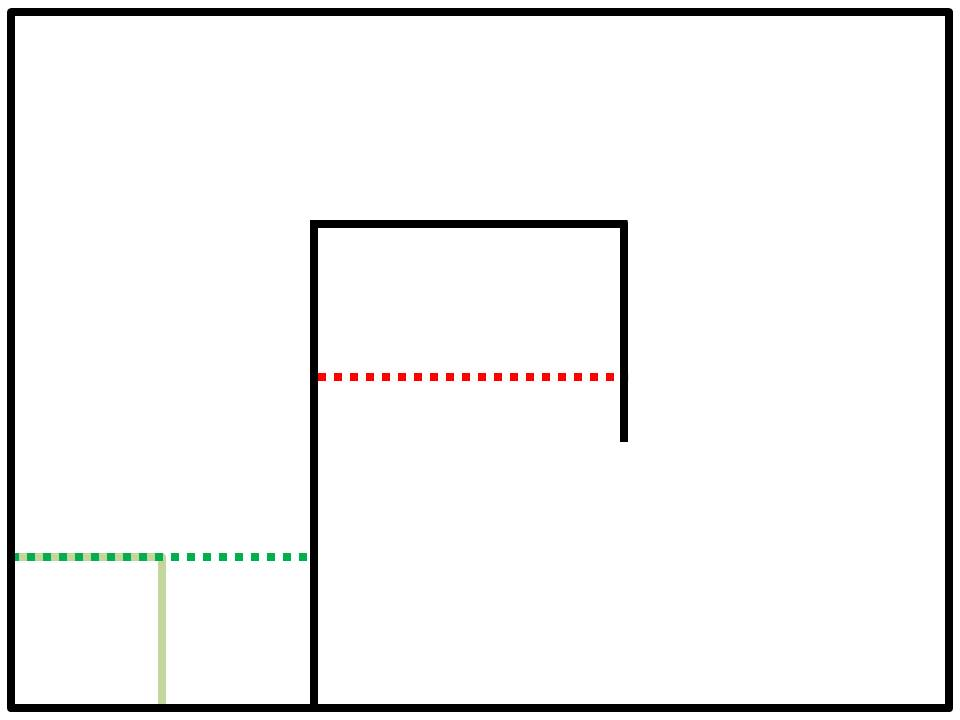

<p>This online resource was developed as part of a robotics grade 4/5 class at a Edmonton school. The lessons full fill the outcomes for the Alberta Program of Studies for grade 4 and 5 in science and mathematics.
</p>

